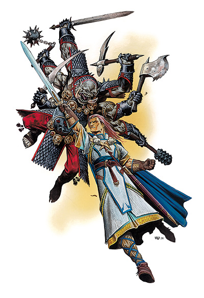
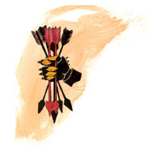

海克斯托（Hextor）

邪恶之王，地狱传令官，战祸根源
中等神力
邪徽：持箭之手

居住位面：Acheron
阵营：守序邪恶
神职：暴政，战争，不和谐，屠杀，冲突，适度
信徒：战士，武僧，征服者，暴君
牧师阵营：守序邪恶，守序中立，中立邪恶
领域：毁灭，邪恶，秩序，战争
偏好武器：连枷
暴虐之神海克斯托有时候会以一个浅色皮肤，黑色头发的英俊男子的形象出现（一般在海克斯托的教会里这样描述他）。更多时候，他以一个可怖的灰黑色皮肤，拥有六只手臂的人形生物的形象出现。此时，他在每只手中都握有一件不同的武器，并穿着一件挂满了骷髅头饰物的鳞甲。
海克斯托是他同父异母的兄弟，另一位战争之神——海若尼斯最大的敌人。
教义
海克斯托追求的是征服毁灭任何与他敌对的人或事。他告诉他的追随者们，尘世间是黑暗而血腥的，在那里，强者奴役弱者，力量才是一切之本，万物之源。而冷酷与残忍才是通向获得绝对力量这一终极目标的唯一途径。要依靠政令铲除混乱，要靠律法建立起权威，这是一个霸者必须要拥有的能力。反对者，则必定要被驱逐或清除，因为他们是让统治偏离轨道的不良因子。
神职人员与神殿
海克斯托教会并不像其他黑暗神的教会那样需要隐蔽。相反，海克斯托的神殿在很多城市中都公开运作，并且，海克斯托的牧师一般穿着黑色的祭袍，并饰有骷髅或灰黑色的面具。
海克斯托的牧师们总是在策划或实施着针对反对者和行善者的打击行动。他们斥责善良的统治者与政府，因为那里有太多的个人自由，并且，他们随时计划着各式各样的诡计去削弱乃至推翻这样的政府，而建立一个热爱征服与暴力的政府取而代之。当他们玩腻了战争和阴谋的时候，他们会训练自身的作战能力，学习战争的艺术。大多数的海克斯托牧师最后成为了将军，参谋，或者是好战的军王手下的实行者，以及干脆就成为铁血暴君本身。
海克斯托的牧师也会在任何时候，任何地方打击着海若尼斯的牧师。
海克斯托的神殿往往建筑成坚固的要塞，其对外人绝对的禁制与自身的雄伟高大往往向世人昭示着海克斯托强大的力量。大多数海克斯托的神殿建筑在战略要地。
海克斯托
牧师20级/战士20级
中体形外界生物（邪恶，守序）
神格等级：15
生命骰：20d8+180（外界生物）加20d8+180（牧师）加20d10+180（战士）（1100hp）
精通先攻：+11，总是最先行动（+7敏捷，+4精通先攻，绝对先攻）
速度：60尺
防御等级：78（+7敏捷，+15神格等级，+28天生防御，+5鳞甲，+9偏转）
攻击加值：+5秩序邪恶幽冥轻型连枷 +74/+69/+64/+59近战，+5长剑 +74/+69/+64近战，+5战斧，+74/+69/+64近战，+5重型硬头锤，+74/+69/+64近战，+5重型十字镐，+74/+69/+ 64近战，+5弯刀，+74/+69/+64近战；或法术 +71近战接触或 +61远程接触
伤害加值：+5秩序邪恶幽冥轻型连枷 1d8+25/19-20，+5长剑 1d8+15/17-20，+5战斧 1d8+15/19-20/*3，+5重型硬头锤 1d8+15/19-20，+5重型十字镐 1d6+15/19-20/*4，+5弯刀 1d6+15/15-20；或者使用法术
占据/威胁范围：5尺*5尺/5尺
特殊攻击：每日12次斥责不死生物，领域神力，超凡神格能力，类法术能力
特性：神格免疫，伤害减免 50/+4，火元素伤害抗力 35，神术自发性施法，理解、交谈及阅读所有语言并直接于任何15里内的生命存在交谈，远程沟通，神祗国度，随意无误传送，随意位面旅行，勇气圣光， SR47，神力光环（1500尺，DC34）
豁免调整值：坚韧 +58，反射 +54，意志 +54
能力值：力量 45，敏捷 25，体质 32，智力 24，感知 25，魅力 29
技能调整值：攀爬 +52，专注 +49，手艺（制作盔甲） +82，手艺（金属加工） +82，手艺（制作武器） +82，交涉 +72，驯养动物 +70，医疗 +23，跳跃 +52，知识（奥术） +68，知识（历史） +45，知识（皇室与贵族） +45，知识（宗教） +68，聆听 +50，骑术（马） +73，探知 +45，察言观色 +45，辩识法术 +45，侦察 +50，技能检定掷骰自然结果总是取20
专长：盲斗，顺势劈，格斗反射，拨挡飞箭，神授力量，闪避，法术强效，忍耐，专家，高级顺势劈，高级多武器格斗+，精通冲撞，精通卸除武器，精通先攻，精通多武器格斗+，精通绊摔，精通徒手打击，法术极效，机动，多巧手，多武器格斗，猛力攻击，即时备战，法术瞬发，飞跑，法术渗透，跳跃攻击，法术定发，精通破坏武器，高级专家，旋风攻击，带+的两种专长允许海克斯托使用每只副手攻击三次。
神格免疫：属性伤害，属性吸取，酸，冷，即死效果，疾病，瓦解，电，能量吸取，心智影响效果，麻痹，毒，睡眠，震慑，变形，监禁，放逐。
超凡神格能力：改变形态，改变现实，改变大小，指明攻击，天神下凡，战斗第六感，神力盔甲熟稔，神力风暴，神力灵感（恐惧），神力护盾，神力暴风雨，神力武器熟稔，额外领域（毁灭），死亡之手，降咒，集体神力风暴，变形（具体见下），绝对先攻。
变形：海克斯托的变形能力允许他在基本人类形态和六臂怪兽形态之间转换。于人类形态时，海克斯托仅有两只手臂，此时他通常使用一把轻型连枷与一把重型硬头锤。
领域神力：施展邪恶领域法术时，施法者等级加1；施展秩序领域法术时，施法者等级加1；每日15次威力打击（在一次攻击中获得+20的命中与伤害加值）
类法术能力：海克斯托可以相当于施法者等级为26级使用善良领域和秩序领域类法术能力，以相当于施法者等级为25使用其他类法术能力。类法术能力的基本豁免DC为34+法术等级。Blade barrier,blasphemy,calm emotions,circle of doom,contagion,create undead,desecrate,dictum,disintegrate,diepel chaos,despel good,divine power,earthquake,flame strike,harrn,hold monster,implosion,inflict critical wounds,inflict light wounds,magic circle against chaos,magic circle against good,magic vestment,magic weapon,order's wrath,power word blind,power word kill,power word stun,protection from chaos,protection from good,shatter,shield of law,spiritual weapon,summon monsterIX（仅限以邪恶领域或秩序领域法术施展）,unholy aura,unholy blight
牧师每日神术：6/8/8/8//7/7/6/6/5/5；基础DC=17+法术等级
财产：海克斯托拥有一把名为“刽子手”的 +5秩序邪恶幽冥轻型连枷。此连枷制造施法者等级为20，重5磅。
其他神格能力
作为一个中等神力，海克斯托在任何掷骰中自动取20，海克斯托在攻击检定和豁免检定掷骰自然值出1时，并不视作必然失败，而是视作普通失败。他是不朽的。
感知：海克斯托可以看见，听见，触摸和嗅到15哩的距离。作为一个标准动作，他能够感知到任何动物，他的信徒，圣迹，与他有关的物体和任何他的名字在一个小时内被说出的地点周围15哩内的一切。他能够立即将他的感知延伸到10个地方。他立即能够在2个地方阻止神格等级等于或者小于他的神的感知力量，时间最长可达15个小时。
神职感知：海克斯托可以在事情的发生前15周，发生后15周，或发生时立刻感知到任何与残忍，暴政或不公有关的事情。
自动动作：海克斯托能够以一个自由动作使用其手艺（制作盔甲），手艺（金属加工），手艺（制作武器），或知识（皇室与贵族）等技能，只要该项任务的DC在25或者更低。他每轮能够完成10个类似的自由动作。
创造魔法物品：海克斯托能够创造任何魔法武器，盔甲，以及任何具有毁灭性的魔法物品，比如horn of blasting，只要物品的交易价格不超过200000GP。
化身
海克斯托的派遣他的化身去作恶，去帮助那些有天分和能力的征服者们，以及去任何有海若尼斯活动的地方捣乱和破坏。
海克斯托的化身：如同海克斯托的本体，但以下除外：神格等级为7；先攻调整值 +11；防御等级62（接触33，措手不及55）；攻击加值 +66/+61/+56/+51近战（1d8+25/19-20，+5秩序邪恶幽冥轻型连枷），+66/+61/+56近战（1d8+15/17-20， +5长剑），+66/+61/+56近战（1d8+15/19-20/*3，+5战斧），+66/+61/+56近战（1d8+15/19-20，+5重型硬头锤），+66/+61/+56近战（1d6+15/19-20/*4，+5重型十字镐），+66/+61/+56近战（1d6+15/15-20， +5弯刀 ）；或法术 +63近战接触或 +53远程接触；特性：伤害减免 42/+4，火焰伤害抗力 27，SR39，神力光环（700尺，DC26），豁免调整值 坚韧 +50，反射+46，意志+46；所有技能调整值减8
超凡神格能力：改变形态，改变大小，战斗第六感，神力盔甲熟稔，神力灵感（恐惧），神力护盾，神力武器熟稔，额外领域（毁灭），降咒，变形。
类法术能力：施法者等级为17级，基本豁免DC为26+法术等级。